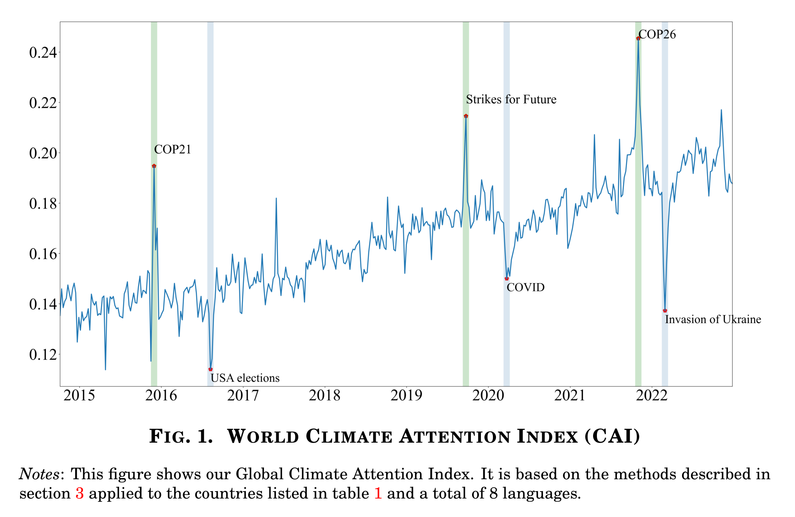

Our central measurement object is the Climate Attention Index (CAI): a high-frequency, country-level index of how much attention major news outlets on Twitter/X are paying to climate change, relative to everything else they publish. It is built from text, not sentiment labels — so it captures how much the news is talking about climate, which we then use as the source of identifying variation throughout the paper.
We track the Twitter/X feeds of major newspapers across a broad cross-section of developed and emerging economies, in each country's own language, from January 2014 through December 2022.
Sample period: January 2014 – December 2022. Languages: English, Spanish, Portuguese, French, German, Italian, Arabic, Norwegian and Swedish. Countries span the Americas, Europe, Asia‑Pacific and Africa, including both advanced and developing economies (IMF classification).
For each country, we turn raw tweets into a comparable, high-frequency attention score in three steps.
Tweets are stripped of links, handles, special characters and stop words, then stemmed. Cleaned text is aggregated into daily (or monthly) "documents" per country.
Each document is converted into tf‑idf term scores and compared, via cosine similarity, to a climate-change vocabulary translated into all 8 sample languages.
Country-level indices are combined into the World CAI — an equally-weighted average that we use to identify global climate-attention shocks.
The index rises sharply around major, unambiguously climate-related events — COP21, the 2019 Strikes for Future, and COP26 — and falls when attention is crowded out by other major stories, such as the COVID‑19 pandemic and the invasion of Ukraine. Throughout the paper, we use spikes in this index ("top climate-attention days") as the source of identifying variation for currencies, equities and capital flows.

World Climate Attention Index (CAI). Equally-weighted average across all sample countries. Shaded bands mark major global events. Source: International Climate News, Arteaga‑Garavito, Colacito, Croce & Yang.
The main identification strategy isolates days of unusually high climate-related attention, not days with a particular kind of climate content. So the results on the Main Results page are best read as the response to climate‑attention shocks generally — the paper's separate decomposition by risk type (physical vs. transition risk) is a distinct exercise reported in the full text.